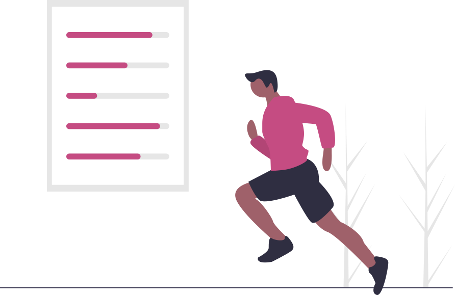
Coaching chez vous
Coaching at your home or workplace
Coaching en ligne
Online coaching
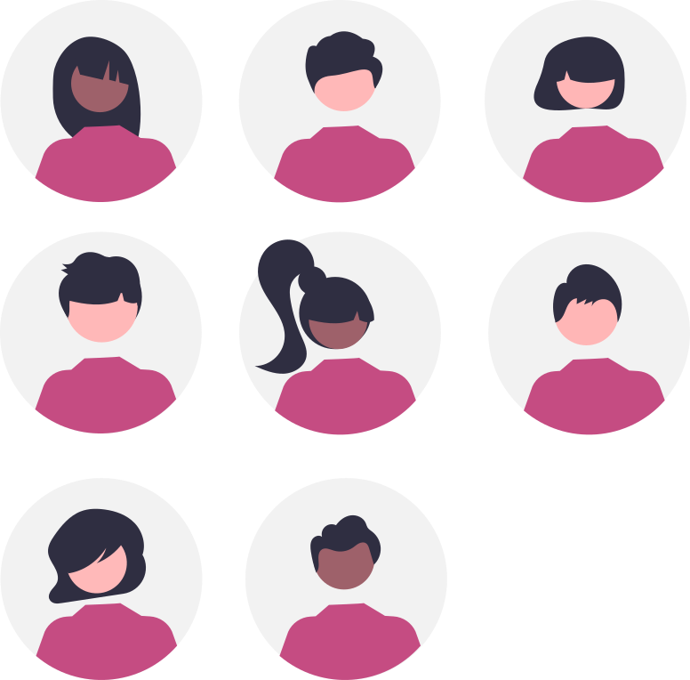
Entraînement de groupe :
V-Forme (Carcès)
Free Run (Brignoles)
Group training:
V-Forme (Carcès)
Free Run (Brignoles)
À propos
About me
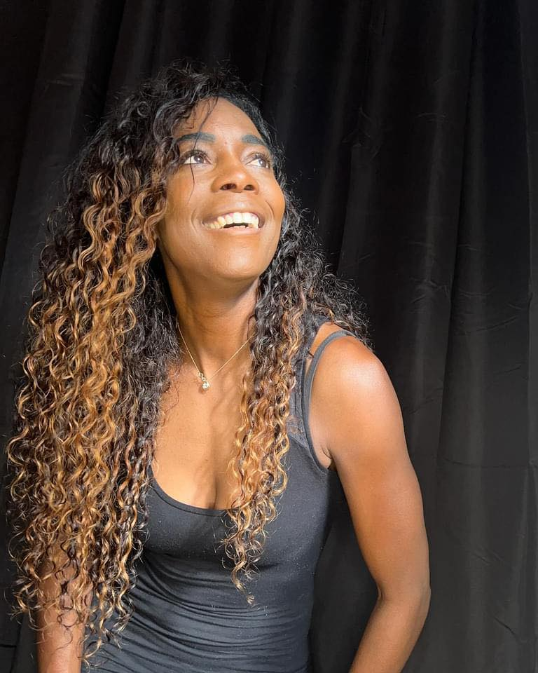
Je suis Fabé Dia, coach sportif et ancienne athlète de haut niveau
ayant participé à deux Jeux Olympiques en athlétisme.
Forte
de mon expérience sur les pistes et de mon expertise en préparation
athlétique, je mets aujourd’hui mes connaissances au service de
celles et ceux qui souhaitent atteindre leur plein potentiel.
Mon
approche du coaching repose sur l’adaptation des techniques du haut
niveau à chacun, que vous soyez débutant, sportif confirmé ou en
quête de bien-être. À travers des séances privées ou en groupe, je
vous accompagne vers une meilleure santé physique, mentale et
émotionnelle.
Mon objectif : vous aider à vous dépasser, à renforcer votre corps
et votre esprit, et à intégrer l’excellence du sport de haut niveau
dans votre quotidien.
Prêt ou prête à transformer votre
énergie en force ? Rejoignez-moi !
Vous pouvez lire à mon
sujet sur ma page
Wikipédia.
N'hésitez pas à me contacter si vous souhaitez obtenir
plus d'informations sur moi et les services que je propose.
I am Fabé Dia, a sports coach and former elite athlete who competed
in two Olympic Games in athletics.
Drawing from my
experience on the track and my expertise in athletic preparation, I
now use my knowledge to help those who want to reach their full
potential.
My coaching approach is based on adapting
high-level techniques to each individual, whether you are a
beginner, an experienced athlete, or simply seeking well-being.
Through private or group sessions, I guide you toward better
physical, mental, and emotional health.
My goal: to help
you push your limits, strengthen your body and mind, and integrate
the excellence of elite sports into your daily life.
Ready
to turn your energy into strength? Join me!
You can also
read about me on my
Wikipedia
page.
Please don't hesitate to get in touch if you would
like more information about me and the services I offer.
Entraînez-vous avec moi
Train with me
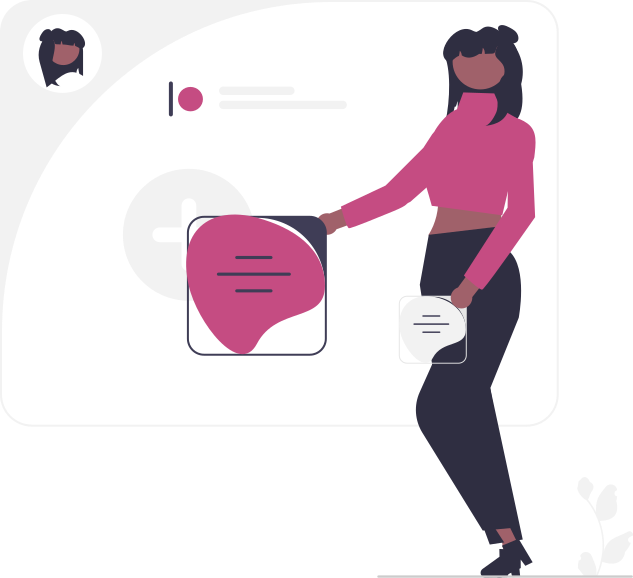
Programme personnalisé
Personalised training programme
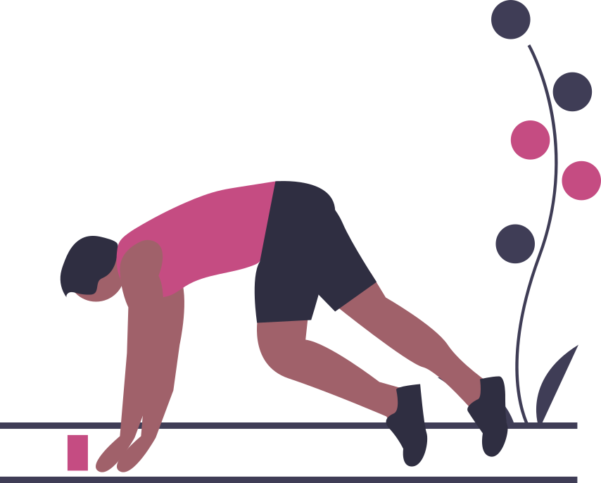
Améliorez votre technique de course
Improve your running technique
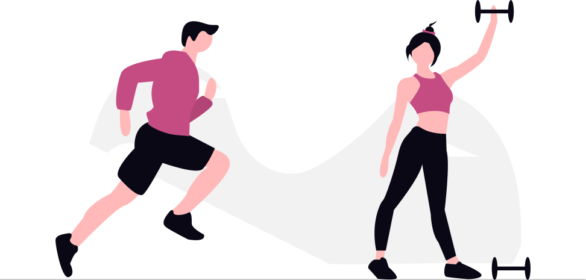
Remise en forme
Get back in shape
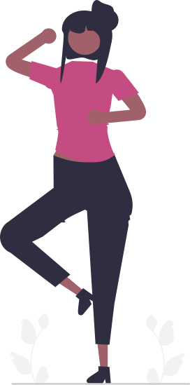
Retrouvez votre équilibre
Rediscover your balance
Le quotidien est stressant, la routine métro-boulot-dodo fatiguante,
peu de temps pour soi.
Le mouvement intégral avec Fabé est une solution
efficace. C'est la redécouverte de votre corps qui bouge de façon
naturelle et fonctionnelle allié au plaisir de prendre soin de
vous.
L'entrainement se fonde sur deux principes
simples.
Le premier est de se référer en permanence aux gestes de notre
quotidien. Sans nous apercevoir, nous faisons travailler tous les
jours nos muscles - en soulevant les sacs de course, en passant
l’aspirateur, en montant l’escalier, en nous levant pour aller
chercher un dossier, en portant nos enfants ...
Le mouvement intégral vise donc à reproduire ces
différents mouvements en les optimisant pour éviter les blessures et
pour développer une silhouette harmonieuse, et en les rendant plus
intenses et plus performants.
Le second principe est de
faire travailler les chaînes musculaires dans leur globalité. Au
contraire des entrainements de musculation classiques, dits
analytiques, qui se concentrent sur un ou plusieurs muscles en les
isolant, le travail fonctionnel prend en compte toute
la chaîne musculaire et les articulations. Le haut et le bas du corps
travaillent en même temps et non de façon isolée. Des d’exercices sont
complets et ludiques.
En parallèle au
mouvement integral et son travail fonctionnel, il y a
le travail analytique et son panel d’exercices
choisis afin de renforcer le corps, améliorer la posture, et
travailler l’équilibre. L’utilisation de charges additionnelles grâce
aux machines de musculation, aux haltères, aux barres, aux kettlebell,
aux élastiques, et au Reformer permet d’augmenter la masse musculaire,
de renforcer les articulations et les tendons, mais aussi de prévenir
des blessures.
Au-delà de la pratique sportive, les
bienfaits du renforcement musculaire sur la
santé générale des individus sont nombreux:
- Meilleure santé cardio-vasculaire
- Diminution des douleurs dorsales
- Meilleure densité osseuse (prévention de l’ostéoporose)
- Perte de poids : Un entrainement en résistance va déclencher différents mécanismes physiologiques qui peuvent grandement contribuer à la perte de masse grasse. Associé à un régime diététique, il accélère le processus de perte de poids. Le renforcement musculaire entraîne une élévation de la dépense énergétique, et donc de bruler davantage de calories même au repos.
- On donne du galbe à la silhouette !
Les activités de stretching et de
pilates sont complémentaires au renforcement
musculaire et à tout autre type d’activité sportive en général. Elles
permettent également de passer un moment sportif différent des autres
activités beaucoup plus dynamiques.
La combinaison
d’activités dynamiques et d’activités douces est un cocktail très
puissant pour le
bien être physique et mental.
En fin,
l’étirement prépare le corps à l’exercice et aide à favoriser la
récupération après un effort physique; il peut être
actif ou passif.
Everyday life is stressful, and the routine of commuting, working, and
sleeping can be exhausting, leaving little time for yourself.
Integral movement with Fabé offers an effective
solution. It’s about rediscovering your body, moving naturally and
functionally, while enjoying the process of taking care of
yourself.
The training is based on two simple
principles.
The first is to constantly refer to the movements of our daily lives.
Without even realising it, we engage our muscles every day — lifting
shopping bags, hoovering, climbing stairs, standing up to grab a file,
carrying our children, and more.
Integral movement aims to replicate these various
motions, optimising them to prevent injuries, develop a harmonious
physique, and make them more intense and effective.
The
second principle is to work the muscle chains as a whole. Unlike
traditional, analytical strength training, which focuses on isolating
one or more muscles, functional training considers
the entire muscle chain and the joints. Both the upper and lower body
work together, rather than in isolation. The exercises are
comprehensive, engaging, and fun.
In parallel with
integral movement and its functional work, there is
analytical work and its selection of exercises
designed to strengthen the body, improve posture, and enhance balance.
The use of additional resistance through weight machines, dumbbells,
bars, kettlebells, resistance bands, and the Reformer helps increase
muscle mass, strengthen joints and tendons, and also prevent
injuries.
Beyond sports practice, the benefits of muscle
strengthening on overall health are numerous:
- Better cardiovascular health
- Reduction of back pain
- Improved bone density (prevention of osteoporosis)
- Weight loss: Resistance training triggers various physiological mechanisms that can greatly contribute to fat loss. When combined with a proper diet, it accelerates the weight loss process. Muscle strengthening increases energy expenditure, leading to more calories burned, even at rest.
- It enhances the body's shape and definition!
Stretching and Pilates activities
complement muscle strengthening and all other types of sports
activities in general. They also provide a different kind of workout
compared to more dynamic activities.
The combination of
dynamic activities and gentler exercises is a highly effective formula
for both physical and mental well-being.
Finally, stretching prepares the body for exercise and helps promote
recovery after physical effort; it can be active or
passive.
Témoignages
Testimonials
Ma rencontre avec Fabé a été pour moi un arc en ciel après une après midi de pluie. Je m’étais égaré sur ce que j’aimais et je n’avais plus d’activité physique après avoir toujours été sportive. J’avais pris du poid, j’avais un rapport avec moi même qui était grossier et dévalorisant. Fabé a été pour moi bien plus qu’une coach de sport mais une coach de vie. Elle a su me faire ressortir la personne lumineuse qui étais enfouit en moi. Elle a su me redonner petit à petit confiance en moi, en mes valeurs et mes principes. Elle m’a donné courage à faire du ménage autour de moi et à m’autoriser d’être qui je suis, laisser cette petite fille mal mener s’ouvrir à la vie. Alors voilà vous l’aurez compris Fabé m’a fait souffrir dans le sport 😂 mais quelle liberté et oxygène elle m’a apporter. Je ne pense pas avoir rencontré déjà dans ma vie une personne aussi talentueuse, humble et humaine. Une personne admirable que j’aime profondément.
⭐️⭐️⭐️⭐️⭐️Meeting Fabé was like a rainbow after an afternoon of rain. I had lost my way when it came to what I loved, and I was no longer doing any physical activity after having always been an athlete. I had gained weight, and my relationship with myself was harsh and demeaning. Fabé was much more than just a sports coach to me — she was a life coach. She managed to bring out the radiant person that had been buried within me. Little by little, she helped me regain confidence in myself, my values, and my principles. She gave me the courage to clear out the negativity around me and to allow myself to be who I truly am — to let that mistreated little girl open up to life. So yes, as you can imagine, Fabé made me suffer in sports 😂, but what a sense of freedom and breath of fresh air she brought me! I don’t think I’ve ever met someone so talented, humble, and deeply human. An admirable person whom I love dearly.
⭐️⭐️⭐️⭐️⭐️
La Fabé, femme merveilleuse ... ma sauveuse. Je sortais d'une période difficile de ma vie, et elle a réussi à la rendre plus vivable. Elle a été un rayon de soleil dans un ciel sombre. Rien que de savoir que j'avais un cours avec elle, c'était la VIE pour moi ... Recevoir un de ses messages, c'était comme respirer, comme voir la lumière. Je peux dire qu'elle m'a sauvée à vie. Son sourire, sa force, son esprit ont été pour moi un véritable refuge. Si je suis la femme que je suis aujourd’hui, c’est UNIQUEMENT grâce à toi, FABÉ. Tu es la personne la plus importante de ma vie … souviens-t'en toujours.
⭐️⭐️⭐️⭐️⭐️Fabé, a wonderful woman … my savior. I was coming out of a difficult period in my life, and she managed to make it more livable. She was a ray of sunshine in a dark sky. Just knowing that I had a session with her was LIFE for me … Receiving a message from her was like breathing, like seeing the light. I can say that she saved me for life. Her smile, her strength, her spirit were a true refuge for me. If I am the woman I am today, it is ONLY thanks to you, FABÉ. You are the most important person in my life… always remember that.
⭐️⭐️⭐️⭐️⭐️
Fabé est une coach exceptionelle avec une grande empathie et toujours bienveillante. Elle nous pousse à nous dépasser ! Je recommande à 200%
⭐️⭐️⭐️⭐️⭐️Fabé is an exceptional coach, who is very empathetic and kind. She always pushes us to challenge ourselves, and I would recommend her 200%
⭐️⭐️⭐️⭐️⭐️
Mais je tiens quand même à te dire que je n’aime pas du tout le sport de base, mais alors pas du tout ! Cependant, avoir fait ta connaissance et venir à tes cours est un vrai plaisir pour moi. Tu m’as réconciliée avec le sport. Ta joie de vivre, ta bonne humeur, ton empathie, ton respect, ton humour, ton sourire et ton professionnalisme sont un vrai plaisir.
⭐️⭐️⭐️⭐️⭐️But I still want to tell you that I don’t like sports at all, not even a little! However, getting to know you and attending your classes is a real pleasure for me. You have reconciled me with sports. Your joy for life, your good mood, your empathy, your respect, your humor, your smile, and your professionalism are truly a pleasure.
⭐️⭐️⭐️⭐️⭐️
Passionnée de running, j’avais besoin de conseils pour compléter mes entraînements de course à pied. Adepte du renforcement musculaire à la maison, j’ai souhaité un coaching personnalisé régulier avec Fabé pour évoluer dans mes objectifs personnels. Sportive de haut niveau, cette femme aussi dynamique que professionnelle me conseille avec bienveillance et bonne humeur, lors de nos séances matinales ! Fabé me renseigne sur tous les sujets qui entourent le sport, le corps, le mental, la nutrition et la santé. J’ai découvert les bienfaits du Reformer sollicitant les muscles profonds tout en douceur. Voilà pour moi une activité sportive complémentaire alliant sport et bien-être.
⭐️⭐️⭐️⭐️⭐️Passionate about running, I needed advice to complement my running training. A fan of strength training at home, I wanted regular personalised coaching with Fabé to progress toward my personal goals. A high-level athlete, this woman — both dynamic and professional — guides me with kindness and good humour during our morning sessions! Fabé provides me with insights into all topics related to sports, the body, the mind, nutrition, and health. I discovered the benefits of the Reformer, which engages deep muscles gently. For me, this is the perfect complementary activity, combining fitness and well-being.
⭐️⭐️⭐️⭐️⭐️
Fabé a été l’une de mes plus belles rencontres 2024. Elle m’a énormément aidée autant au plan professionnel que personnel. Ça été plus qu’une coach mais une amie, un exemple, une force, un soutien ! La connexion est directement passée et le travail que nous avons fait durant 3 mois m’a énormément apporté. Biensur qu’il y avait de la douleur physique mais c’était toujours avec des rires, de la bonne humeur et du soutien. Je ne me suis jamais sentie aussi bien a faire du sport, dépasser ses limites, avoir mal, qu’avec Fabé à côté pour me motiver !! Elle est un exemple pour moi et m’aide toujours dans mon chemin de vie. J’habite aux États-Unis donc je ne peux malheureusement pas travailler avec elle comme j’aimerais. Je conseille à toutes personnes d’avoir une Fabé dans vos vies !! Et vous aideras à atteindre vos objectifs. En tout cas sans aucun doutes des que je rentres pour quelques mois ce sera avec elle que je continuerai à travailler dur pour atteindre mes objectifs. Encore milles Merci!!!
⭐️⭐️⭐️⭐️⭐️Fabé was one of the most amazing people I met in 2024. She helped me tremendously, both professionally and personally. She was more than just a coach — she was a friend, a role model, a source of strength, and a great support! We connected instantly, and the work we did over three months brought me so much. Of course, there was physical pain, but it was always accompanied by laughter, good vibes, and encouragement. I’ve never felt so good while working out, pushing my limits, feeling the pain — because with Fabé by my side, I was always motivated. She is an inspiration to me and continues to support me on my journey. I live in the United States, so unfortunately, I can't train with her as much as I’d like, but I highly recommend everyone to have a "Fabé" in their lives — they will help you reach your goals! Without a doubt, whenever I come back for a few months, I will continue working hard with her to achieve my objectives. A thousand thanks again!!!
⭐️⭐️⭐️⭐️⭐️
Contact
Fabé DIA
Appelez-moi ou envoyez-moi un message sur :
Call or send me a message on:
+33 781 77 40 97
Envoyez-moi un e-mail :
Send me an email :
E-mail Fabé Email Fabé
Rendez-moi visite dans mon studio (uniquement sur rendez-vous) à
270 Av Adjudant Chef Marie Louis Broquier, 83170 Brignoles (entre Delko et les avocats)
Visit me in my studio (with appointments only) at:
270 Av Adjudant Chef Marie Louis Broquier, 83170 Brignoles (between Delko and the lawyers)
Ou retrouvez-moi sur les réseaux sociaux :
Or find me on social media:
Galerie
Gallery
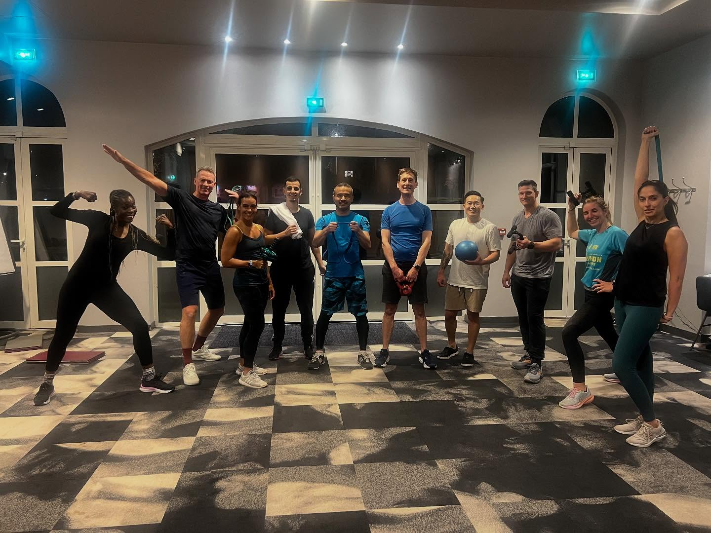
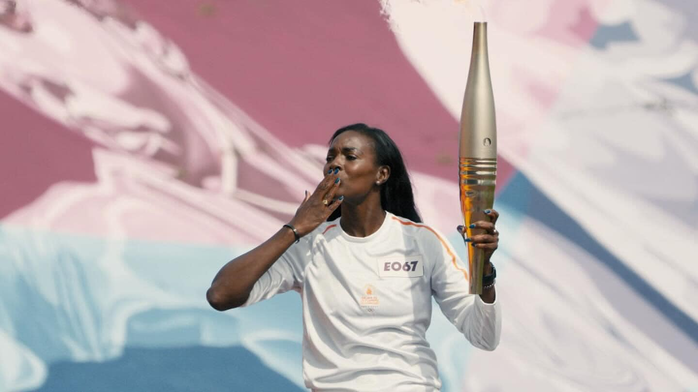
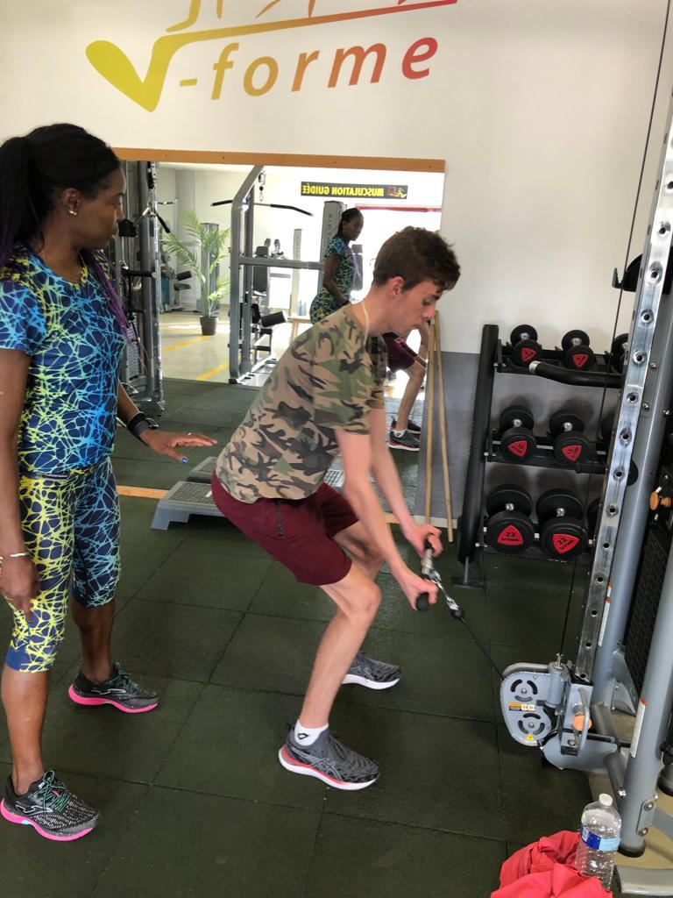
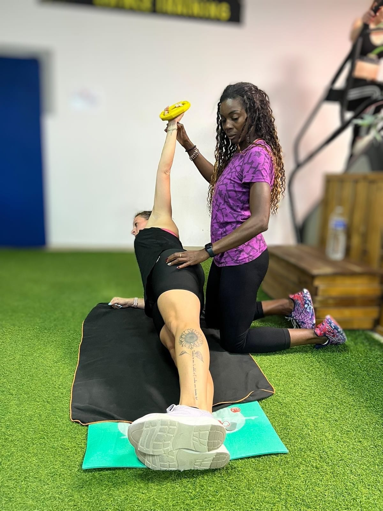
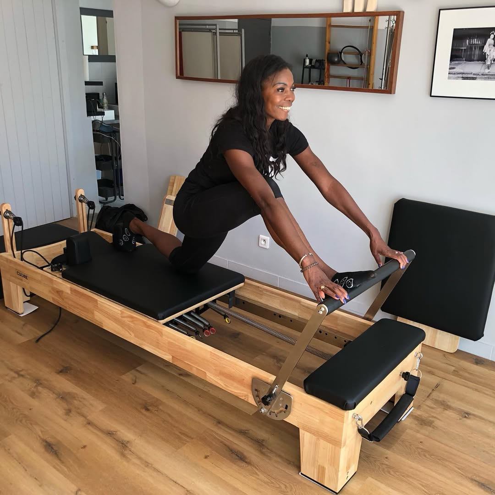
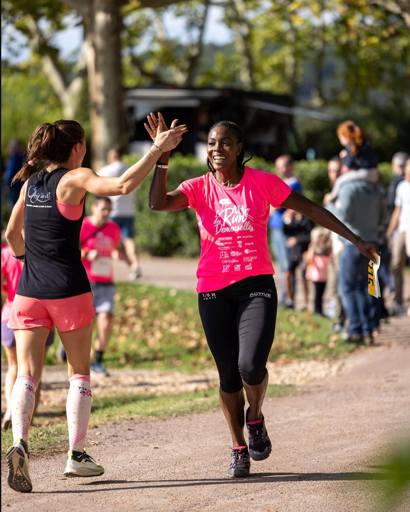
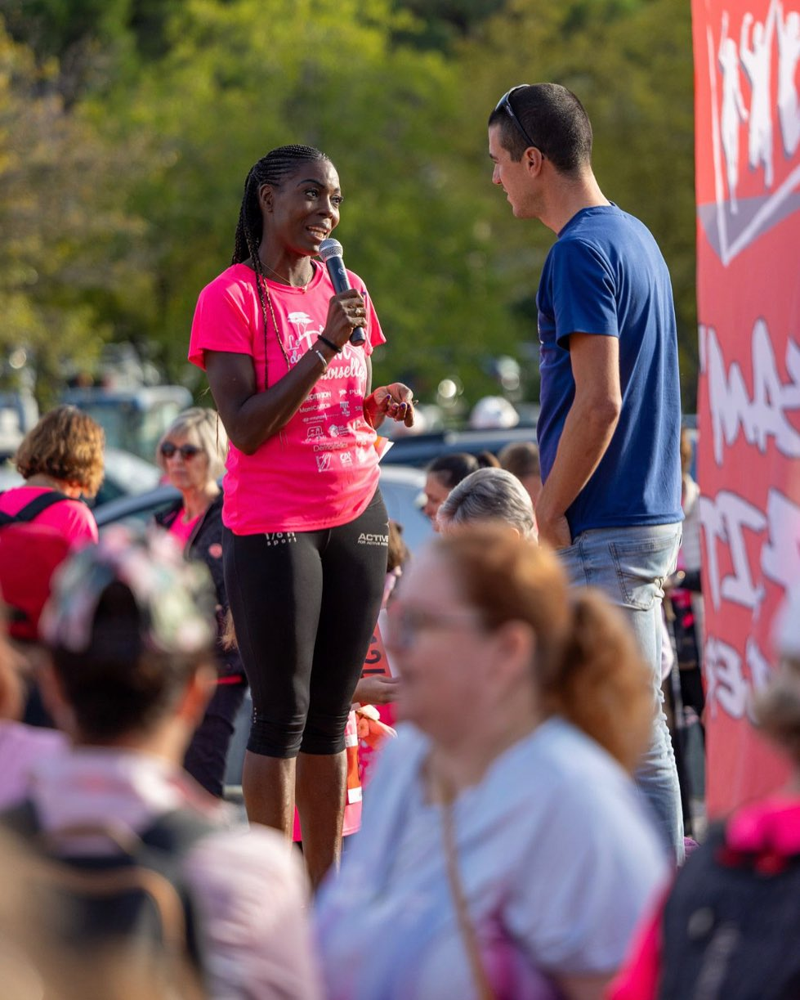
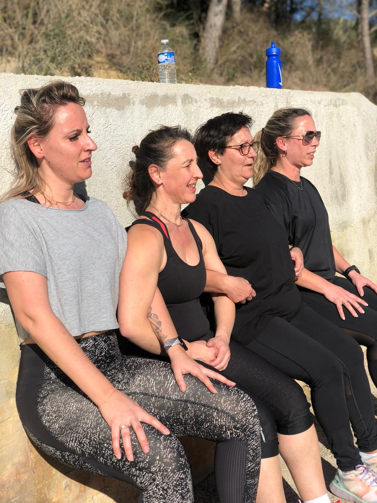
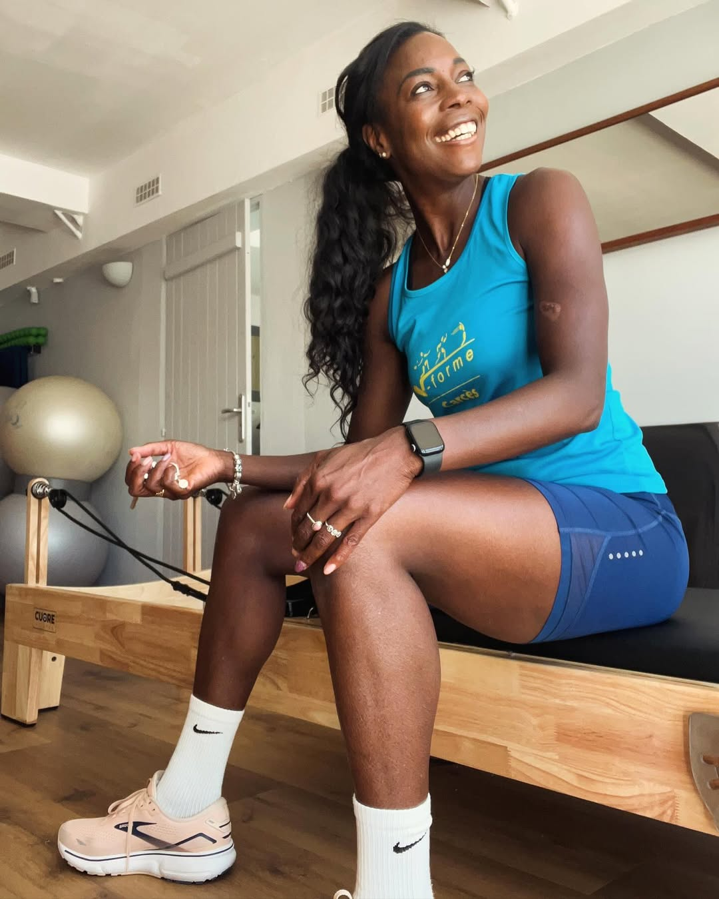
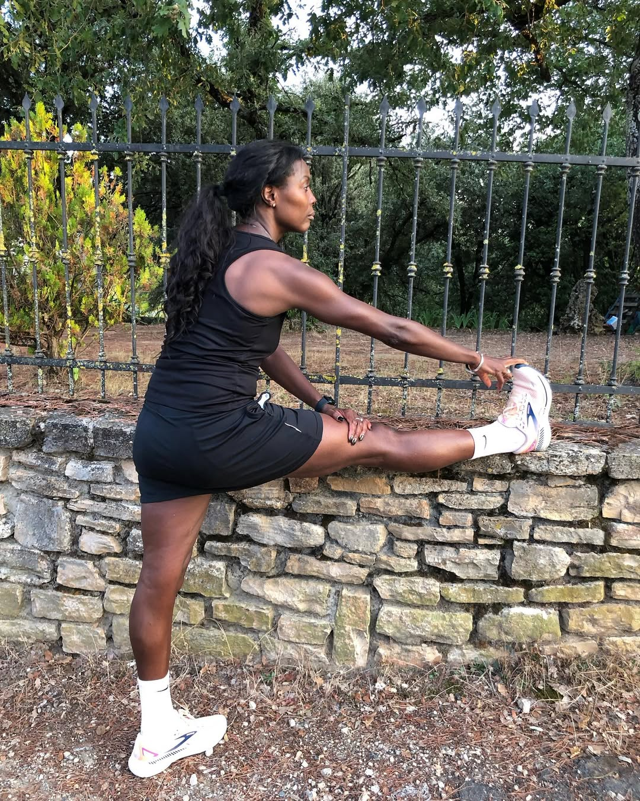